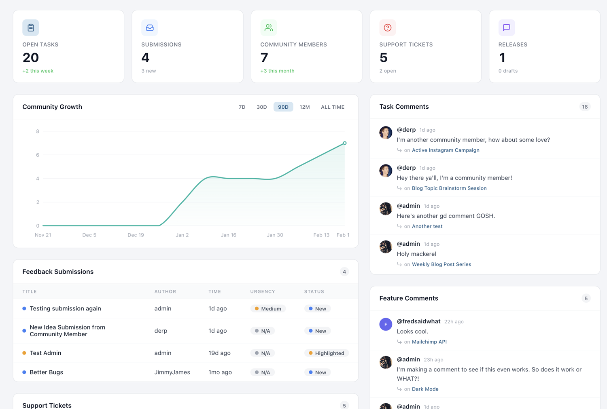

Analytics & Overview Dashboard
The Overview dashboard is your command center. It surfaces key metrics across all your projects — open tasks, community growth, submission volume, and support ticket health — so you can spot trends and take action without digging through individual pages.
Dashboard KPIs
When you first land on the Overview page, you'll see a row of key performance indicator cards at the top. These give you an instant snapshot of your project's health:
- Open Tasks — The total number of tasks across all task groups that are not yet marked as completed. This tells you how much work is outstanding.
- Completed Tasks — Tasks that have been resolved, giving you a sense of throughput and progress over time.
- Total Features — The number of feature requests in your system, both open and closed.
- Community Members — How many people have registered on your project portal.
Each KPI card also displays a trend indicator — a percentage change compared to the previous period. A green upward arrow means growth (more completions, more members), while a red indicator signals a decline. These trends help you understand whether your project is gaining momentum or needs attention.
The KPIs update in real time as your team and community interact with the project. There's no need to refresh or wait for a nightly data sync — what you see is always current.
Community Growth Metrics
Understanding how your community is growing is essential for gauging the success of your public-facing project. The community growth section of the dashboard shows you new member registrations over time, plotted as a daily or weekly trend line.
You can see when registration spikes occurred — often correlating with product launches, social media mentions, or feature voting campaigns that you've promoted externally. Identifying these spikes helps you understand what drives community engagement and lets you replicate successful strategies.
The growth chart also breaks down registration sources when available. If members are signing up through Google or Facebook social login versus email registration, you'll see that distribution here. This can inform decisions about which login methods to prioritize and where to focus your outreach efforts.
For projects with a large community, pay attention to the daily active members metric alongside raw registration numbers. A growing community that doesn't return to vote or comment may indicate that your portal needs more compelling content or more frequent updates to keep people engaged.
Recent Submissions Feed
The recent submissions feed gives you a live, chronological list of the latest feedback your community has submitted. Each entry shows the submission title, the member who submitted it, and when it was created.
This feed is designed for quick triage. When you start your day, scan through recent submissions to identify urgent bugs, popular requests, or items that need immediate attention. You can click any submission to jump directly to its detail page, where you can respond, assign it to a team member, or convert it into a task or feature.
The feed shows submissions across all of your projects if you manage more than one. Use the project filter dropdown (covered below) to narrow it down to a specific project when needed. For teams that receive high volumes of submissions, establishing a daily triage routine around this feed is one of the most effective ways to stay on top of community input.
Support Ticket Breakdown
If you have support tickets enabled on your project, the dashboard includes a dedicated breakdown section. This shows your tickets organized by status: open, in progress, and resolved.
The ticket breakdown also surfaces key operational metrics. Average response time tells you how quickly your team is acknowledging new tickets. Resolution time measures how long it takes from ticket creation to closure. Both of these metrics are critical if you're committed to providing timely support through PathPro.
Volume trends are displayed as a simple chart showing ticket creation over the past 30 days. A sudden spike in ticket volume after a release might indicate a regression or a confusing new feature. Conversely, a steady decline in tickets over time could mean your product is stabilizing or your documentation is improving.
For teams using PathPro as their primary support channel, this section replaces the need for a separate support analytics tool. Everything you need to assess your support performance is available at a glance.
Task and Feature Analytics
Beyond the top-level KPIs, the dashboard provides deeper analytics on tasks and features. This section reveals patterns in how your team works and how your community engages.
Comment activity shows you which tasks and features are generating the most discussion. High-comment items often represent either contentious decisions or highly anticipated features — both worth paying attention to. You can use comment volume as a signal for prioritization, surfacing items that your community cares most about.
Voting trends display how voting activity has changed over time. You'll see total votes cast per day or week, along with the top-voted features for the current period. If voting activity drops, it might be time to promote your feature voting page again or add new features for the community to weigh in on.
Task completion rates are broken down by task group, giving you visibility into which areas of your roadmap are progressing and which are stalled. If a particular task group has been at 20% completion for weeks, it might need more resources or a scope adjustment.

Project Filtering
If you manage multiple projects in PathPro, the dashboard aggregates data across all of them by default. The project filter dropdown at the top of the page lets you switch between an all-projects view and a single-project view.
When you select a specific project, every section on the dashboard — KPIs, community growth, submissions, tickets, and analytics — updates to show data only for that project. This is essential for teams managing several products or brands, each with its own community and roadmap.
The filter selection persists during your session, so you can navigate away and come back without losing your context. If you always work on a single project, the filter remembers your last choice and defaults to it on your next visit.
For account owners with many projects, the dropdown also includes a search field to quickly find the project you're looking for without scrolling through a long list.